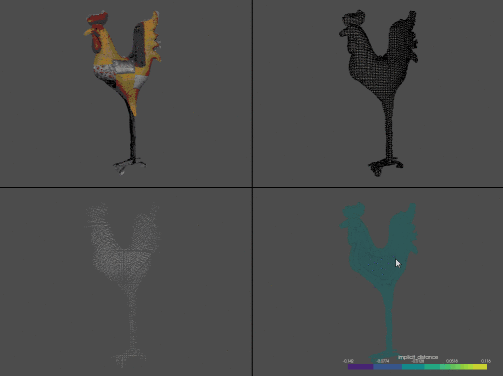

External Examples
Here are a list of longer, more technical examples of what PyVista can do!
Caution
Please note that these examples link to external websites. If any of these
links are broken, please raise an issue.
Do you have a technical processing workflow or visualization routine you would
like to share? If so, please consider sharing your work here submitting a PR
at pyvista/pyvista and we would be
glad to add it!
Coil Field Lines example in Magpylib

Ivan Nikolov on Neighbourhood Analysis
Ivan Nikolov on Voxelization

Ivan Nikolov on Visualization Libraries

Gradient Descent Visualizer

GmshModel

GeoVista

PteraSoftware

Stéphane Laurent’s artwork

Atmospheric Convection

Damavand Volcano

Anvil Cirrus Plumes

Optimization visualization with PyVista

FLEM: A diffusive landscape evolution model

Orvisu Demo Application

PyMeshFix’s example gallery

TetGen’s example gallery

PVGeo’s example gallery

FORGE Geothermal Project

OpenFOAM Rendering

3D Rendering with Discretize

3D visualization for the Open Mining Format (omf)